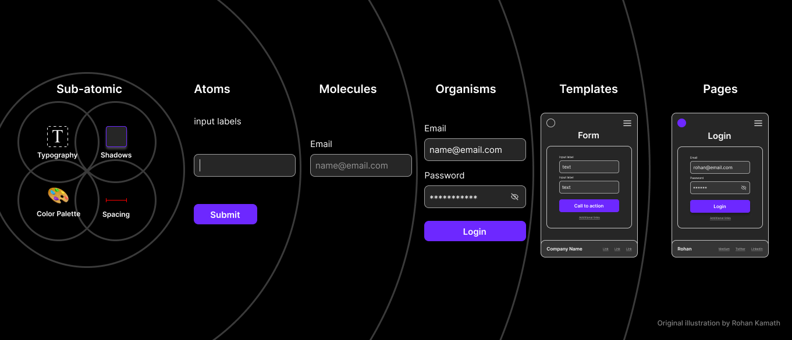
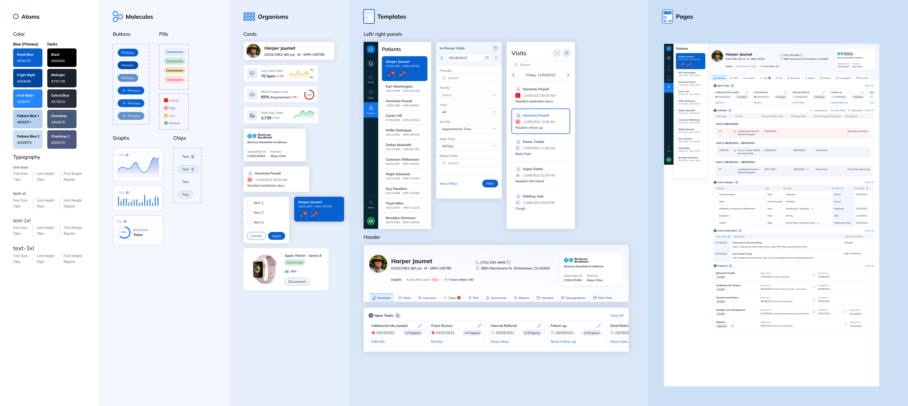

Build a design system that scales — from your first sketch to every screen.
Turn last session's feedback into a system that holds together — no matter how many screens you add.
Do you use a design system?If yes — how do you actually use it day to day?
Where does your work feel inconsistent?Buttons, spacing, colours that never quite match.
Ever rebuilt something that already existed?A component you redrew instead of reusing.
What slows you down the most?The part of designing you wish were easier.
Nobody planned it — it just happened, one screen at a time. That's how a concept users loved becomes something nobody recognises.
The same Add and Confirm patterns serve both experiences — and shared components like the form field and buttons power them underneath. Reuse compounds at every level: build once, use everywhere.


Pick the 2–3 screens that capture what users responded to. Write their names — these are your Pages, the destination.
Strip one screen of everything — text, images, colour. Draw a grey rectangle for each section and give it a plain name: nav, content, action. That's your Template skeleton.
Open your concept sketch. Pick your 2–3 most important screens. Draw the skeleton for one of them — grey rectangles only. Give every section a plain name. Come back with your list of zones.
Think about what a user does in each zone — navigating, searching, adding, confirming. Those are interaction patterns, and they're exactly how design systems name their Organisms. You already mapped your system without knowing it.
Build your own tokens from your concept's personality — or adopt an existing system and override the few that matter. Either way, every value traces back to what users told you.
Atoms → Molecules → Organisms is the system. Template → Page is the product. And each layer maps straight onto the experience architecture you saw earlier.
Hand it to an AI tool — Cursor or Claude — and watch it become a prototype. The better your system, the better the result.
Five steps from sketch to system. The Template and Page prove it works.